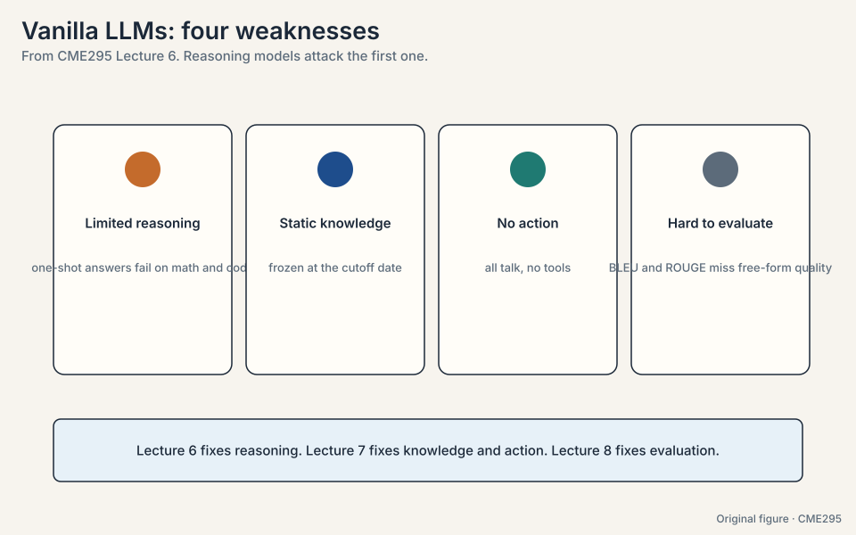
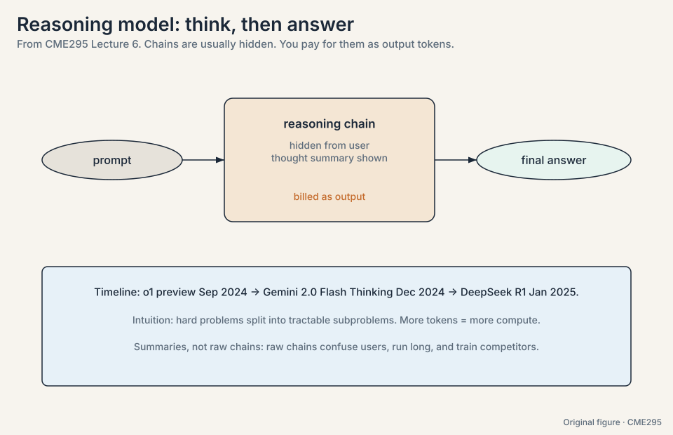
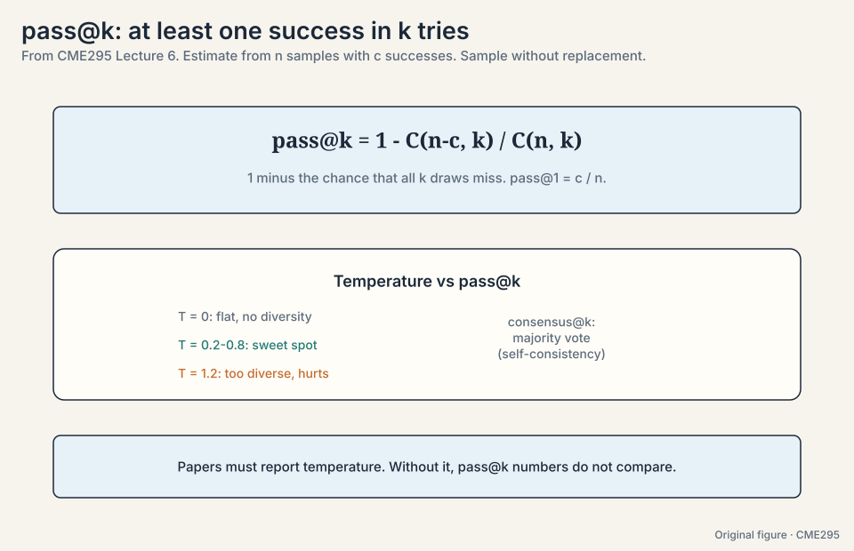
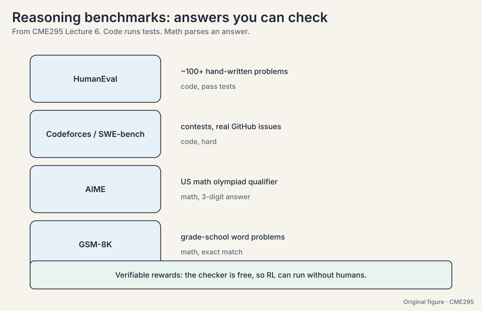
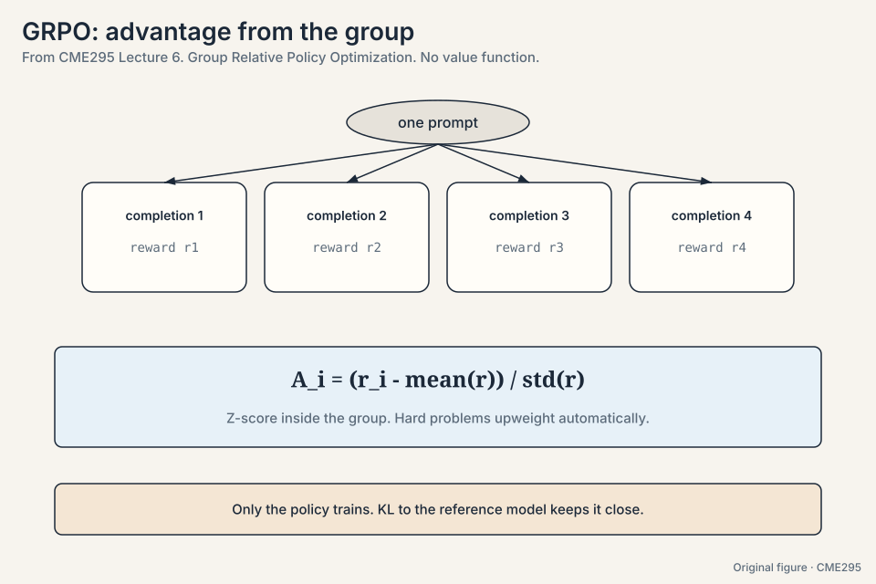
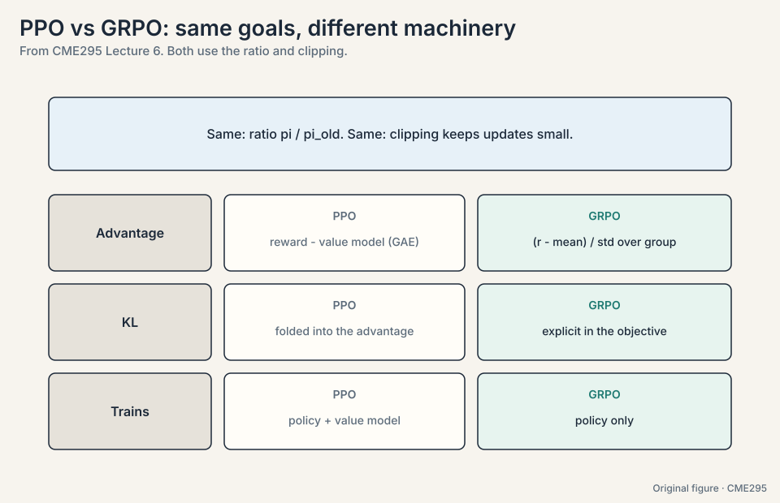
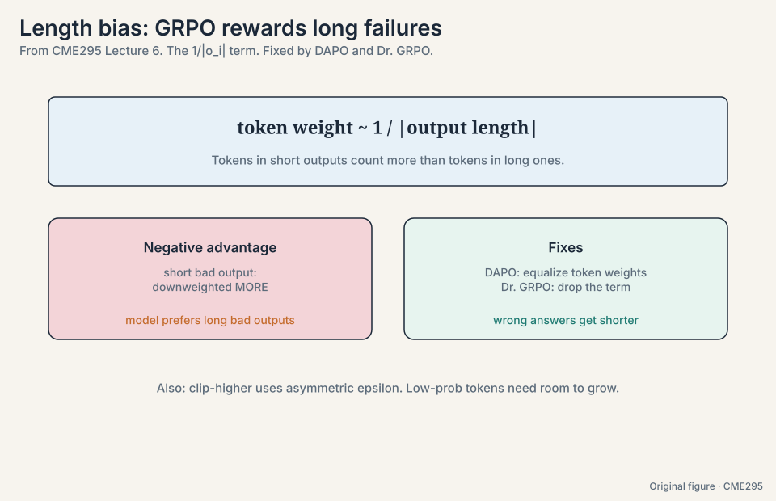
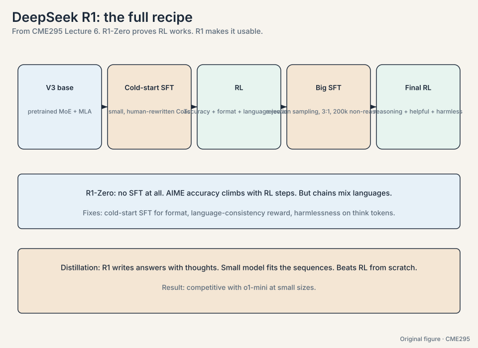
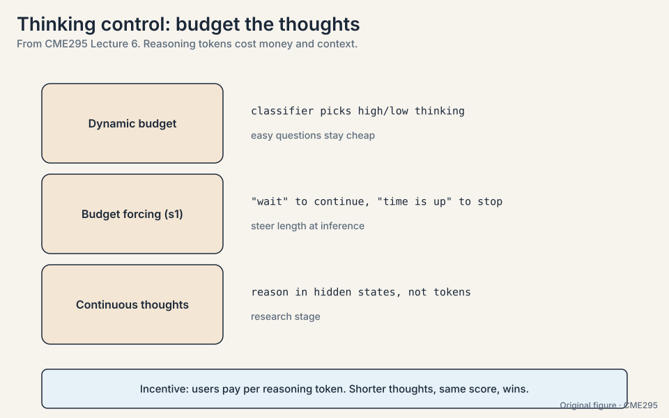

Lecture 6: Reasoning Models and GRPO
Video blocked (ad-blocker or local file mode).
Watch on YouTubeVideo not loading? Watch on YouTube
Original lecture. Reasoning models, GRPO, length bias, and the R1 training pipeline.
The problem: one-shot answers fail on multi-step problems
Ask a vanilla LLM a hard math problem and demand the answer in one shot. It writes the answer directly. On single-step questions this works. On multi-step problems it fails: each step is a chance to err, and one wrong step poisons the answer. There is no room to work.
Reasoning here means the ability to solve a problem through multiple steps, not the ability to sound thoughtful. Four weaknesses frame the rest of the course: limited reasoning, static knowledge (everything bound to the cutoff date, 10:44), no action (all talk, no tools. Lecture 7 fixes this), and hard evaluation (Lecture 8 fixes this). This lecture attacks the first.

Think, then answer
A reasoning model splits generation in two: first a reasoning chain (think tokens), then the final answer. The chain is usually hidden from the user. Interfaces show a thought summary instead (25:53). The lecture gives three hypothesized reasons: raw chains confuse users, they run long, and they can train competitors.
The core intuition is economic. Hard problems decompose into tractable subproblems the model has seen in training, so more tokens means more compute spent well. And reasoning tokens are billed as output tokens, so long chains cost real money. The toy: a 50-token answer costs X. A 50-token answer with 500 thinking tokens costs 11X for the same user-visible words.
The timeline: o1 preview in September 2024 (22:45), Gemini 2.0 Flash Thinking in December 2024, DeepSeek R1 in January 2025 (23:18), then xAI, Anthropic, and Mistral entries. R1 mattered because it matched frontier performance with a published method.

The problem: one sample understates the model
A reasoning model may solve a problem on its third try after failing twice. Accuracy on one sample understates it. pass@k asks: if you draw k attempts, what is the probability at least one succeeds?
Estimate it from n samples with c successes (32:17):
pass@k = 1 - C(n-c, k) / C(n, k)
Work it by hand. n = 10 samples, c = 3 successes, k = 2 attempts:
failures: n - c = 7 P(both attempts miss) = C(7, 2) / C(10, 2) = 21 / 45 = 0.467 pass@2 = 1 - 0.467 = 0.533
The trick is the complement: C(n-c, k)/C(n, k) is the chance that all k draws come from the n-c failures, sampling without replacement (40:58). One minus that is the chance at least one succeeds. pass@1 reduces to c/n = 0.3, the plain success rate. Two attempts lift 0.3 to 0.533: the k-try behavior is the operational quantity, and it is much higher than the single-try number.
Temperature interacts directly. T = 0 gives no diversity: every draw is the same, so pass@k is flat at pass@1. T = 1.2 gives too much diversity: draws wander off. The sweet spot sits around T = 0.2-0.8. The lecture’s example peaks at 0.8 (47:02). Papers must report temperature or their pass@k numbers do not compare. consensus@k (majority vote over k samples, i.e. self-consistency) is the companion metric.

Because the k attempts are k distinct draws from your n samples. Drawing the same sample twice would double-count one outcome. The hypergeometric form C(n-c,k)/C(n,k) counts distinct k-subsets, which matches how you would actually take k attempts. pass@1 measures the typical single try. Reasoning models are often deployed with sampling plus selection (best-of-N, majority vote), so the k-try behavior is the operational quantity. A model with pass@1 of 0.3 and pass@32 of 0.9 is very usable with the right harness.
Verifiable rewards: the checker is free
Reasoning benchmarks share one property: the answer is verifiable without a human. Code runs tests. Math parses a final answer.
- HumanEval (29:08): ~100+ hand-written programming problems with tests.
- Codeforces / SWE-bench (29:31): competition problems and real GitHub issues.
- AIME: US math olympiad qualifier. Integer answers that parse cleanly.
- GSM-8K: grade-school word problems. Exact-match grading.
Verifiable answers unlock verifiable rewards: the checker is free, so RL can run without humans in the loop. That is the economic fact behind this entire lecture. SFT could teach reasoning chains, but the chains would have to be hand-written: expensive, and human reasoning patterns are not necessarily what helps a model. RL with verifiable rewards sidesteps both problems: reward correct answers and let the model discover its own chains.

The key question
The reward is one sparse number at the end of a long answer. How do you turn that single signal into per-token learning without training a critic model?
GRPO: the group is the baseline
GRPO (Group Relative Policy Optimization, 2024, 58:49) is the go-to algorithm. For one prompt, sample a group of g completions and score each. The advantage of completion i is its z-score inside the group:
A_i = (r_i - mean(r)) / std(r)
Work it on a toy. One prompt, g = 4 completions, rewards [0, 0, 1, 0] (three wrong, one right):
mean = 0.25, std = 0.433 A_correct = (1 - 0.25) / 0.433 = +1.73 A_wrong = (0 - 0.25) / 0.433 = -0.58
The correct completion gets a large positive advantage. Each wrong one gets a mild negative one. No value function: the group itself is the baseline. Hard problems upweight automatically, because a correct answer among failures gets a large positive z-score.

Against PPO (Lecture 5), the comparison is clean. Both optimize a ratio of new-policy to old-policy probabilities, and both clip updates to stay small. They differ twice. First, GRPO puts the KL penalty explicitly in the objective. PPO typically folds KL into the per-token rewards inside the advantage. Second, PPO trains a value model to center advantages via GAE. GRPO centers with the group mean and trains the policy only. In reasoning setups both skip the reward model entirely: verifiable rewards replace it.

Memory and simplicity. The value model in PPO is a full second network to train, tune, and fit in memory. The group baseline is free: you already sampled the completions. For verifiable rewards the trade is excellent, which is why reasoning training converged on GRPO. Per-token credit assignment. PPO’s value function estimates expected reward at each token, so advantages are token-fine. GRPO’s group z-score is per-completion: every token in a good completion gets the same advantage. Coarser signal, cheaper machinery.
The length-bias bug
GRPO’s objective normalizes each completion’s contribution by its length: a 1/|o_i| factor. Watch what it incentivizes. Two bad completions, both with negative advantage -1:
short failure: 50 tokens. contribution = -1 / 50 = -0.020 long failure: 500 tokens. contribution = -1 / 500 = -0.002
The short bad output is downweighted 10x harder than the long bad output. The model learns: when in doubt, ramble. Empirically, output length keeps climbing after performance plateaus.
Two 2025 fixes remove the incentive. DAPO (March, 85:14) equalizes token-level contributions with a length-independent normalization. Dr. GRPO (“GRPO done right”, 85:36) drops the factor entirely. Result: correct answers keep their length, wrong answers get much shorter. A related fix is clip-higher: asymmetric epsilon bounds, because low-probability tokens need room to grow while high-probability tokens must not collapse to zero.

The DeepSeek R1 recipe
R1-Zero was the proof of concept: take a pretrained base (V3: MoE, MLA, pre-norm), skip SFT entirely, and run GRPO with two rewards, answer accuracy plus format compliance (91:24). AIME accuracy climbs with RL steps. The chains work but mix languages and have syntax issues: with no supervision anchor, the model optimizes freely.
R1, the full pipeline, fixes the rough edges in stages:
- Cold-start SFT (96:44). A small set of human-rewritten chains teaches formatting and language consistency. Orders of magnitude smaller than other stages [uncertain: no number given in the lecture].
- RL. Accuracy plus format plus a language-consistency reward (ratio of target-language tokens, 98:28).
- Large SFT. Mix reasoning and non-reasoning data. Reasoning pairs come from rejection sampling: generate, judge, keep the best (100:12). Non-reasoning pairs (~200k, recycled from V3, 99:42) keep the model generally useful, at a 3:1 reasoning-to-other ratio (100:02).
- Final RL. Reasoning rewards plus helpfulness and harmlessness. Harmlessness applies to all tokens including the think section. Helpfulness is judged at the user-visible level.
Results: reasoning benchmarks split into two clusters, and R1 lands with the closed-source reasoning models.
Then distillation (103:53): use R1 to generate answers with thinking tokens, offline, and SFT a small model on the full sequences. Not the teacher’s distribution, the teacher’s tokens. At small sizes this beats RL from scratch, and the distilled models compete with o1-mini.

The problem: the thinking budget
Reasoning tokens cost money and context, so length needs control:
- Dynamic budget. A classifier routes easy questions to short thinking and hard ones to long thinking.
- Budget forcing (s1 paper, 56:00). At inference, inject “wait” tokens to extend thinking or cut it off and demand the answer. Steering without retraining.
- Continuous thoughts. Reason in hidden states rather than tokens. Research-stage, but it would remove the token tax entirely.

Because the bill is per token and the context window is finite. Length helps until the answer is right. Beyond that it is pure cost. The provider incentive (charge per reasoning token) and the user incentive (pay less, wait less) both point at the shortest chain that still solves the problem. Surprisingly well for a hack. Appending “wait” keeps the model in thinking mode and often improves the answer. Cutting off forces a guess from partial reasoning. It is inference-time steering, so it composes with any trained reasoning model.
Mapping back: each piece answers a reasoning problem
| Problem | Answer | How |
|---|---|---|
| One-shot answers fail multi-step problems | Think-then-answer | Hidden chain first, answer second. Compute scales with tokens |
| One sample understates the model | pass@k | 1 - C(n-c,k)/C(n,k): the k-try probability, by hand |
| Hand-written chains are expensive and human-shaped | Verifiable rewards | Code tests and math answers: the checker is free |
| PPO’s value function is heavy | GRPO | Z-score inside the group: +1.73 for the winner, -0.58 for the losers |
| The normalizer rewards long failures | DAPO / Dr. GRPO | Equalize or drop the 1/|o_i| term: wrong answers get shorter |
| Pure RL produces messy chains | R1’s stages | Cold-start SFT, RL, big SFT with rejection sampling, final RL |
| Small models cannot afford RL | Distillation | SFT the teacher’s tokens, not its distribution |
| Thinking costs money | Budget control | Dynamic budgets, “wait” forcing, continuous thoughts |
The honest price
Reasoning training pays in tokens: the bill is per thinking token, and the context window is finite. GRPO pays in coarse credit assignment: per-completion advantages instead of PPO’s per-token ones. Verifiable rewards pay in coverage: they teach only what a checker can check, so taste, style, and open-ended judgment stay out. Distillation pays in a ceiling: the student cannot exceed the teacher’s tokens. The lecture’s bet is that checkable domains (math, code) are big enough to be worth it.
Recap: the whole lesson on one screen
The story in eight steps. Each step answers the one before it.
- One-shot fails multi-step. Each step is a chance to err. Reasoning means solving through steps, not sounding thoughtful.
- Think, then answer. Prompt to hidden chain to final answer. Chains are hidden. Summaries are shown. Billed as output tokens. o1 Sep 2024 to R1 Jan 2025 set the timeline.
- pass@k measures k tries. 1 - C(n-c,k)/C(n,k). The toy: n = 10, c = 3, k = 2 gives 0.533, up from pass@1 of 0.3. Temperature tunes diversity: 0 is flat, 1.2 is wild, 0.2-0.8 is the sweet spot. Report temperature or do not compare.
- Checkable answers enable free rewards. HumanEval, Codeforces, SWE-bench, AIME, GSM-8K. The checker replaces human labels, so RL runs without humans in the loop.
- GRPO z-scores inside the group. g = 4, rewards [0,0,1,0]: +1.73 for the winner, -0.58 for each loser. No value function. Hard problems upweight automatically.
- Length bias rewards long failures. The 1/|o_i| term downweights a 50-token failure 10x harder than a 500-token one. DAPO equalizes token weights. Dr. GRPO drops the term.
- R1: prove with Zero, ship with stages. R1-Zero: RL only, works but messy. R1: cold-start SFT, RL with language reward, big SFT with rejection sampling (3:1, 200k), final RL with harmlessness on think tokens. Distill down for small models.
- Control the budget. Dynamic budgets, budget forcing (“wait”), continuous thoughts. The shortest chain that still solves the problem.
Official sources and further reading
Official: - Lecture 6 recording (YouTube): timestamped above. - Lecture 6 slides (PDF), CME295 Autumn 2025. - DeepSeek-AI, “DeepSeek-R1” (2025): https://arxiv.org/abs/2501.12948 — the full pipeline. - Shao et al., “DeepSeekMath” (2024): https://arxiv.org/abs/2402.03300 — GRPO.
Further reading: - OpenAI, “Learning to Reason with LLMs” (o1 system card, 2024). - Muennighoff et al., “s1: Simple test-time scaling” (2025): budget forcing. - “DAPO” (2025). - “Dr. GRPO: GRPO Done Right” (2025): length-bias fixes. - Wei et al., “Chain-of-Thought Prompting” (2022): the prompting ancestor of reasoning models.
Caveats from these sources. The cold-start SFT size is ungiven in the lecture [uncertain]. “Several orders of magnitude smaller” is the speaker’s phrasing. Budget-forcing and continuous-thoughts results are as presented live. Timeline months are as stated in the lecture.
Connections to the other courses
- CS336 L16: RLVR: verifiable rewards and GRPO at frontier-lab depth, the mathematical companion to this chapter.
- CS336 L15: post-training: where reasoning RL sits in the full stack.
- CME295 L05: PPO, the algorithm GRPO replaces for reasoning.
- CME295 L03: chain-of-thought prompting and self-consistency, the inference-time ancestors.
- CME295 L08: AIME, HumanEval, and benchmark reading.
Sources
- VIDEOLecture 6 slides (PDF), CME295 Autumn 2025
- PAPERDeepSeek-AI, DeepSeek-R1: Incentivizing Reasoning Capability via RL (2025)
- PAPERShao et al., DeepSeekMath: GRPO (2024)